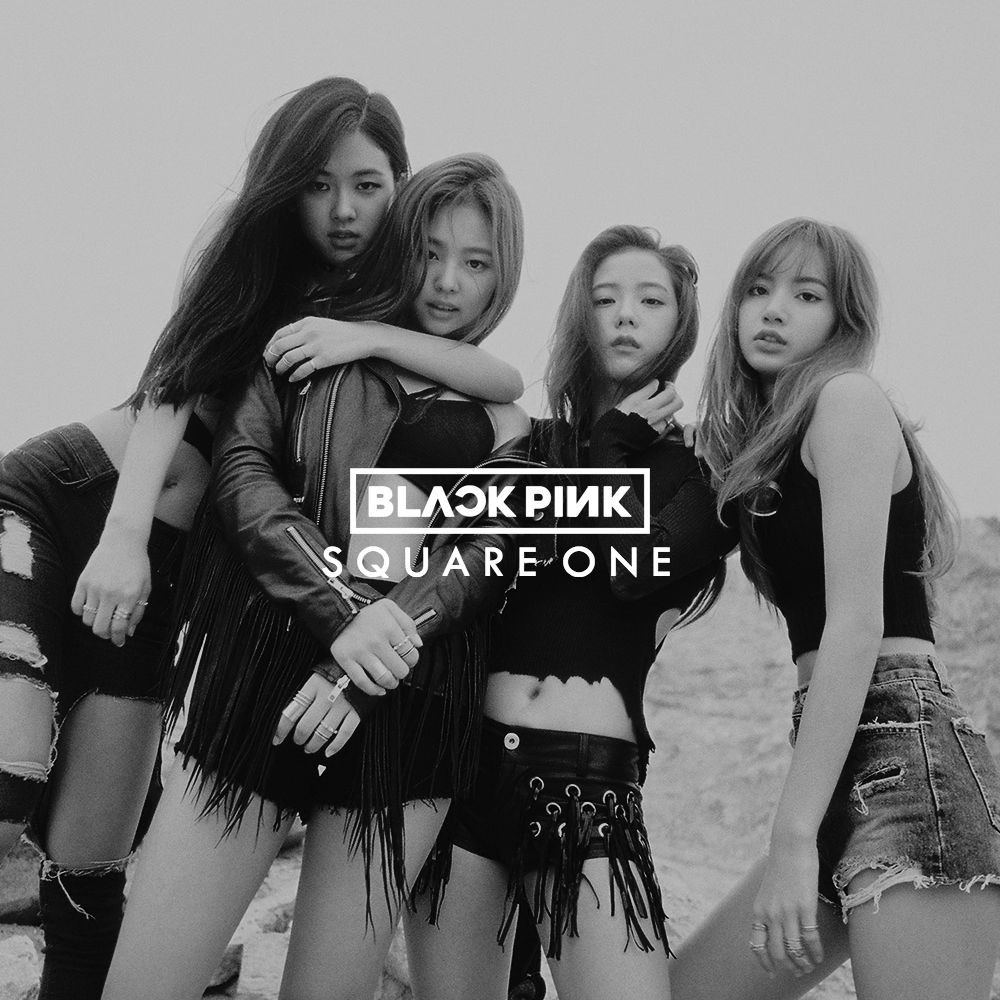

Korean songs, especially those in the K-pop genre, have gained immense global popularity for their catchy melodies, dynamic performances, and high-quality production. K-pop blends various genres like pop, hip-hop, R&B, and electronic music, often featuring visually striking music videos and elaborate choreography. Beyond K-pop, traditional Korean music, such as pansori and trot, also holds cultural significance. Korean ballads and indie music are known for their emotional depth and lyrical storytelling, appealing to diverse audiences both in Korea and internationally. The rise of Korean music has helped shape the global music landscape, transcending language barriers.
